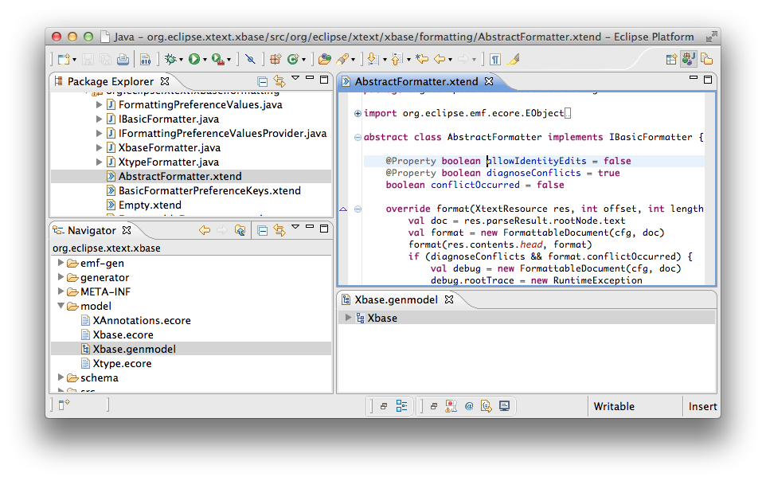
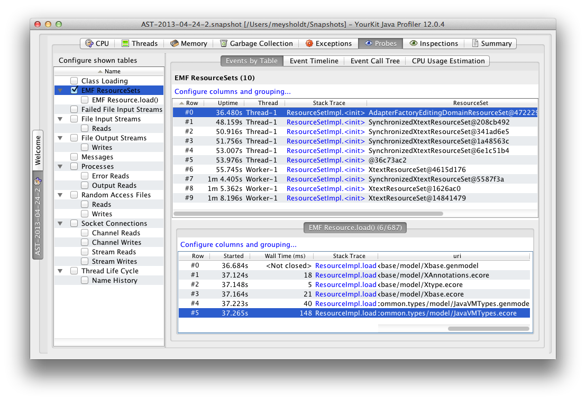
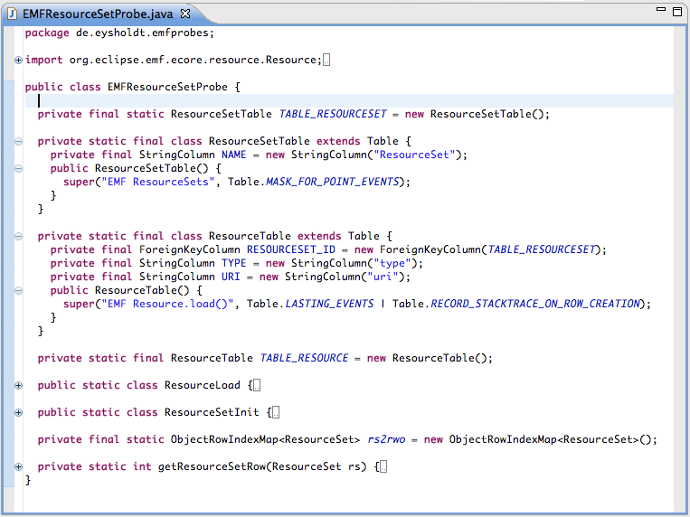
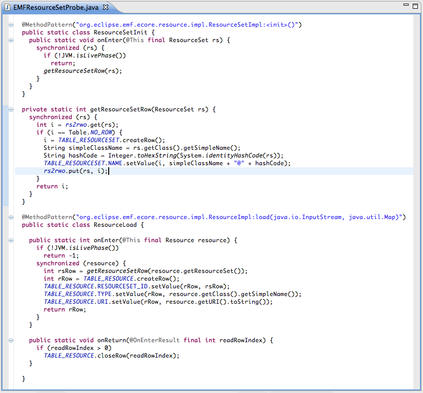

Disclaimer: I'm not affiliated with
Yourkit, but I am grateful for their free licenses for open
source projects. I've been using Yourkit for my work on Xtext and Xtend.
Introduction
Improving the performance of an application can be a challenging thing
to do. As a developer, you usually have some immediate ideas of what
are the performance bottlenecks. However, as Ed said in his presentation at EclipseCon North
America 2013, "Don't trust yourself, don't trust your friends, and
don't even trust me."
I fully approve his message. Why? Experience shows there is
truth in this statement.
If trust does't work, we need facts: We need to measure. We need
to measure how much time it takes to execute our program for specific
tasks. Two tools probably come to your mind as you read this:
- java.lang.System.nanoSeconds(): This simple but useful method
gives you access to a decently precise time stamp at any time. You
can call this method from your own code and calculate and report the
time for what every your desire. But there's a catch: You need to
modify the code that you want to inspect, which you sometimes can't
do because the code is part of a library/framework or you just don't
want to pollute the code.
- A Profiler (such as Yourkit):
This powerful tool lets you measure measure the execution time of
every since method invocation. Sounds awesome? Yes, but there are
some problems with it:
- The "lost in the jungle syndrome": The result of a profiling
session are a bunch of trees representing all stated of the call
stack your application had during the profiling session. And just
like in a jungle, these trees are incredibly huge. Sometimes the
profiler can point out some performance hot spots, but I think that
only works well if you have some very obvious performance problems.
So you end up spending a lot of time climbing through the trees,
considering for every branch whether its existence and time
consumption is justified.
- Observing a system changes it: A profiler usually uses a
java agent, which is a hook in the JVM that allows to manipulate
class files before they're executed. This way the profiler can
inject byte code for performance measurements into the
to-be-analyzed classes. Surely this injected code is small and fast,
but it can have an impact on how the Java JIT can optimize the byte
code. Example: A method that could be in-lined before may not be
in-lined anymore. I don't mind if an application runs slower during
a profiling session, but I do mind if the times measured during
profiling are disproportional to the actual times.
- Parameter values are not available: To understand what the
code is doing, you sometimes need to know the values of the method
parameters. Consider questions such as: Does a certain value occur
so often that introducing an early-exit to the method would improve
the speed? Does the same value occur because the method was
accidentally called from within a loop? Would it help to cache the
result of the method?
Probes to the Rescue
Yourkit allows you to have so-called Probes. Here are some facts
in a nutshell:
- A probe is a Java class that hooks into the invocation of
methods of the to-be-analyzed code. Such hooks can be registered to
be invoked before or after a method has been invoked.
- Installing pre-/post-invocation hooks into methods may sounds
familiar to you from Aspect Oriented Programming (AOP). It's indeed
the same kind of hook, but unlike in AOP you don't need to a special
compiler: Yourkit registers the probes at runtime via its Java agent.
Therefore, probes don't change your build and are applicable for
already compiled libraries.
- You can use probes independently of CPU profiling
(sampling/tracing). A probe is active once it has been registered and
you can choose not to enable CPU profiling at the same time. This may
safe you from getting the "Observing a system changes it" bias.
- Yourkit ships with a set of predefined probes for standard
events, such as Tread lifecycles, file system I/O, etc. You can as
well implement your own probes.
- In a probe's implementation, you can access the hooked
method's parameter- and return values.
- Youkit encourages you to build a Java data structure for your
measured data that resembles a relational data base. If you follow
that pattern, Yourkit has a nice graphical user interface to explore
your measured data.
Probing EMF ResourceSets and Resources
As an example and for further illustration, I've build a small probe
that tracks instantiation of EMF ResourceSets and invocation of EMF
Resources. In the terminology of the Eclipse Modeling
Framework (EMF) a Resource usually represents a file from the file
system. A resource furthermore provides implementations to load a file
into memory as an object tree (aka model) or persist a tree back to
disk.
The following screenshot shows an Eclipse IDE with two open editors.
One editor shows an *.xtend
file and the other one a *.genmodel. Even though both use EMF under
the hood, they have little in common:
- The *.xtend text-editor shows a file persisted as plain text;
It's Resource.load() implementation delegates to an ANTLR parser.
- The *.genmodel tree-editor shows the structure of a file that
is persisted as XML. Here, an XML parser is used.

The Yourkit probe was registered while opening both editors. The
following screenshot shows the measured data:
- In the tree view on the left hand side you can see all
available probes. The probe "EMF ResourceSets" has been developed by
me, all others ship with Yourkit. The checkbox does not
register/unregister the probe. The checkbox shows/hides the data
measured by the probe in the views on the right-hand side of the
tree-view.
- The table on the top on the right-hand side shows a list of
all ResourceSets that have been instantiated. The
AdapterFactoryEditingDomainResourceSet is the one used by the
*.genmodel editor. As you can see, there was more going on in my
Eclipse instance before I took the screenshot. A click on the column
labeled "stack trace" would reveal how a specific ResourceSet has
been instantiated.
- The table on the bottom right-hand side shows all invocations
of Resource.load() for the ResourceSet that is selected in the table
above. Here we can see that tracking of application state is
possible: The column "uri" displays the file name of the file that
has been loaded. The "wall time" is the time in milliseconds that was
spent executing the load() method.

Implementing a Probe
You can find the full source code of this example here
on github.
Before we start implementing a probe, some considerations:
- The code that the probe hooks into needs to have the probe
implementation on the classpath. Furthermore, it is helpful if the
probe has the code it hooks into on the classpath, since otherwise
the probe implementation would need to use Java reflection to inspect
the to-be-analyzed object. This sounds tricky since it is in fact a
cyclic dependency between the probe and the inspected code. Luckily
Eclipse has a simple mechanism to contribute to a plugin's classapth:
Fragments.
A fragment is a bundle with class files, own dependencies and
extension points that at runtime is integrated into the classpath of
a chosen host-plugin. We choose org.eclipse.emf.ecore to be that
host-plugin.
- Probes need to be
registered: We could do that by changing the JVM's startup
arguments, but in an Eclipse environment it seems more convenient to
use the extension point org.eclipse.ui.startup.
- The probe implementation uses Java API
provided by Yourkit. This API ca be found in /lib/yjp.jar inside the
Yourkit installation.
The next screenshot shows the the implementation of the probe.
It is a java class with static members to
- define the data structures for storing the measured values
(TABLE_RESOURCESET, TABLE_RESOURCE).
- intercept calls to ResourceSet constructors (ResourceSetInit)
and Resource#load() invocations.
- map ResourceSet-Objects to Table-Row-IDs (rs2row and
getResourceSetRow()).

Now that you've had an overview over the probe implementation,
here is finally the core, the actual hooks: Each method-hook is a
static Java class that can implement the static methods onEnter() and
onReturn(). Annotations are used for further configuration:
- @MethodPattern specifies the signature of the
to-be-intercepted method.
- @This gives access to the object on which the method has been
called.
- @OnEnterResult gives access to the return value of the
onEnter method.
- @Param(1) gives access to the first parameter of the
intercepted method.
- etc.

Conclusion
- Probes can deliver concise and precise performance
measurements for an application or a group of applications that are
based on the same frameworks/libraries.
- Probes have the potential to define reasonable performance
metrics for specific applications that can be shared across a team of
developers.
- Probes cause significantly less side-effects compared to
general profiling.
- Probes can make use of more information than a profiler, such
as application state, parameter values and return values.
- Implementing probes is some effort. This may be of less
significance when probes can be reused. However, in scenarios were
reuse in not intended - for example the explorative search for
performance issues - their use may be too much effort.